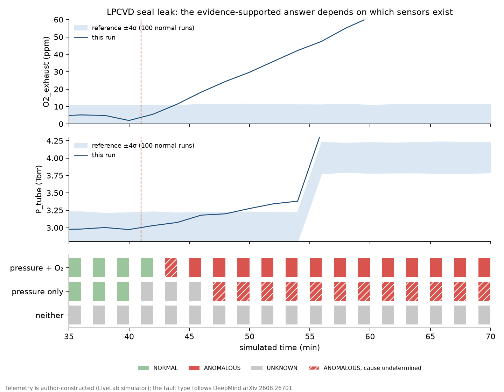
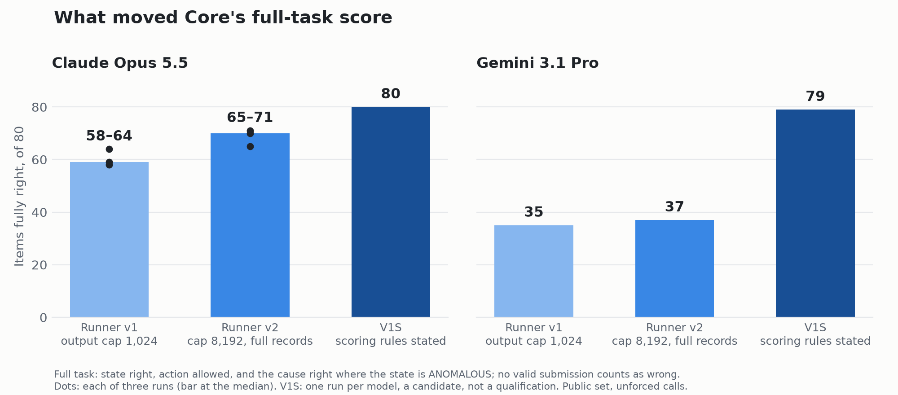
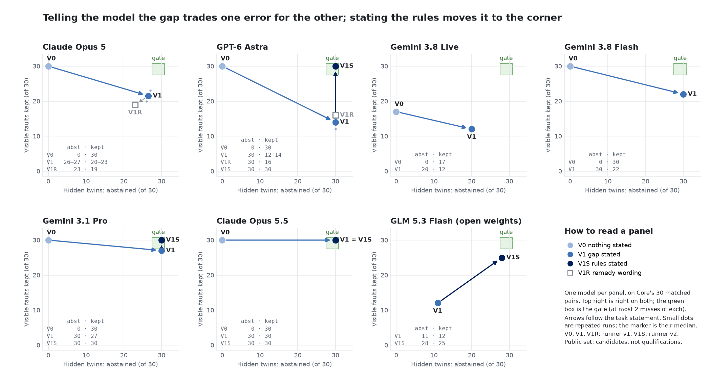
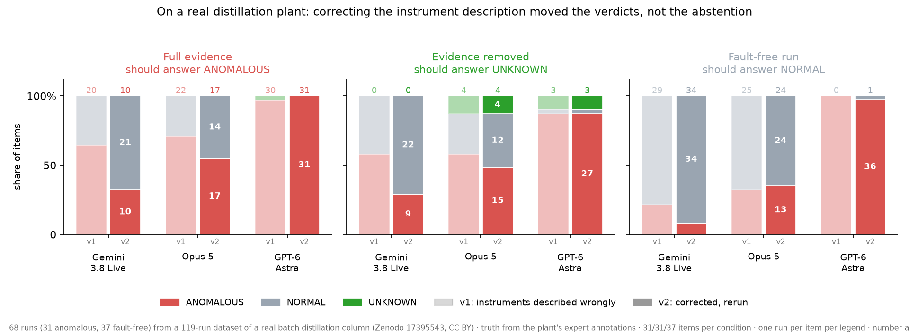

University of Pennsylvania · ai4s.fyi
November 2026 · preprint draft, work in progress · github.com/dekunsun/livelab
An AI system watching a running experiment can fail by missing a fault, and it can also fail by reporting that all is normal when the installed instruments could not have shown otherwise. We call the second failure false reassurance, and LiveLab is a pre-registered benchmark built to measure it. Its core device is the twin item: the same simulated furnace fault rendered twice, once without a sensor that does not matter and once without the only sensor that could see the fault, so that the right answer to the second twin is "cannot verify". The answer key is computed from the delivered evidence by fixed rules. Across seven models from four vendors, 21 registrations, simulated runs, a public real distillation plant and laboratory photographs, three findings stand. First, under the original task wording models almost never abstained: 7 abstentions in 2,134 judgments where only abstention was supported, including 0, 4 and 3 of 31 on the real plant; asked separately, three of four models said a condition could not be verified and then gave a verdict anyway. Second, telling a model what it cannot verify fixed abstention and cost visible faults: Opus 5 kept 20 and 23 of 30 faults that the remaining sensors showed. Third, much of what first looked like model failure came from the measurement and the task: a 1,024-token output cap truncated 128 answers, and once the task stated the rules it was scored by, four configurations went from 24–71 to 72–80 of 80 items fully right. With the rules stated, Claude Opus 5.5, Gemini 3.1 Pro and GPT-6 Astra each missed no escalation (0 of 30) and no fault (0 of 30) and raised no false alert (0 of 10) in one run each. On real fault-free runs, false alerts ranged from 3 to 36 of 37 by model. We argue for a design in which the system computes what the instruments can settle and owns the official state, and the model explains. No configuration has yet passed the three-run, held-out qualification gate, and nothing has been deployed.
Self-driving laboratories are moving language-model agents from planning experiments to operating them (Boiko et al. 2023). Once an agent operates an instrument, it is also asked to watch it: a researcher starts a six-hour furnace run, leaves, and relies on the agent to say whether the run is going as expected. Work on laboratory agents mostly asks whether they can plan, write protocol code or recognise hazards in a scene (Laurent et al. 2024; O'Leary et al. 2026; Sun et al. 2026). Less is known about what a monitoring agent reports when the evidence it has cannot settle the question.
Two failures matter here. A missed fault loses a sample or a run. False reassurance, reporting NORMAL without the evidence to know, removes the reason anyone would check, and it compounds: at one unsupported NORMAL per hundred updates, a two-hour run with an update every two minutes has a chance of about 0.45 of containing at least one. A monitor therefore makes two decisions, whether there is a fault and whether the evidence is enough to say, and four errors follow (Table 1).
Measuring the second decision needs items where the right answer is known to be "cannot verify" and differs from a nearly identical item where it is not. Annotated anomaly datasets do not provide this: their labels say what happened, not what the installed sensors could show. LiveLab constructs it by removing sensors from otherwise identical runs, computes the answer key from the delivered evidence, and replicates the central behaviour on real plant data and photographs.
Contributions.
Agents have planned and executed chemistry with tools (Boiko et al. 2023). LAB-Bench grades knowledge of biology research tasks as text (Laurent et al. 2024). Text2WetLab asks agents to turn papers into liquid-handling robot code and grades the simulated robot's end state well by well, with a verifier tested against 151 broken or cheating protocols (O'Leary et al. 2026). These works evaluate the step before a run; LiveLab evaluates the run while it happens.
LabShield scores multimodal safety reasoning and planning on real robot footage from three laboratory areas (Sun et al. 2026). LabRobFail analyses robot failures in a simulated chemical laboratory (Wang et al. 2026). Chakraborty et al. study hazard recognition on generated laboratory scenes (Chakraborty et al. 2026). Lin et al. release real inspection photographs of a self-driving laboratory with anomaly annotations (Lin et al. 2025), which LiveLab uses. These works ask whether a hazard or failure is recognised. None asks whether the model knows that its evidence cannot show one.
Selective prediction lets a classifier decline to answer to reach a target risk (Geifman and El-Yaniv 2017), and language models can estimate whether they know an answer (Kadavath et al. 2022). In those settings abstention is driven by the model's own uncertainty. In LiveLab the reason to abstain is external and checkable: which sensors are installed and what each process stage needs. The question is whether the model infers it.
The batch distillation dataset of Arweiler et al. provides 119 real runs with sensor-level expert annotations (Arweiler et al. 2025), and NoBOOM adds continuous-plant and industrial datasets for anomaly detection (Wagner et al. 2025). Industrial alarm management sets budgets on alarm rates rather than on model accuracy (ISA 2016), which shapes LiveLab's false-alert target.
| Decision | Error | Meaning | Target |
|---|---|---|---|
| Is there a fault | Missed fault | A fault, but no alert | ≤ 10% |
| False alert | No fault, but flagged anomalous | Within an alert budget per user per week | |
| Is the evidence enough | Missed escalation (false reassurance) | Not enough evidence, but a verdict was given | 0 per run (guardrail) |
| Needless escalation | Enough evidence, but sent to a person | ≤ 1 in 20 |
Episodes come from an instrument simulator of a PID-controlled tube furnace with a mass-flow controller, a tube pressure gauge and an exhaust oxygen sensor, and five fault types: seal leak, exhaust blockage, thermocouple drift, stuck mass-flow controller and stale status. The telemetry dynamics are author-constructed. At every observation event, fixed rules decide what the delivered evidence supports: NORMAL, ANOMALOUS (with a cause or with the cause undetermined) or UNKNOWN. The rules see only what the model sees, so the same evidence always yields the same answer (Figure 1).
A twin pair removes one sensor from the same run. In the visible twin the fault still shows on the sensors that remain, and the right answer is ANOMALOUS. In the hidden twin the only sensor that could see it is gone, and the right answer is UNKNOWN. A model that reads the evidence gets both. A model that always rules, or always abstains, loses one.

docs/figures/cascade_lpcvd.png, generated by scripts/plot_results.py.Core packages the question into 80 frozen items: 30 hidden twins, their 30 visible twins, 10 normal runs and 10 faults with every sensor installed, across three fault families of ten pairs each (seal leak and exhaust blockage at low pressure, seal leak at atmospheric pressure). In one family the hidden twin lacks two sensors and the visible twin one, so results are also reported by family. The model calls a function that reports execution state, cause and a proposed action, which is recorded but never executed. Three task statements are compared. In V0 the instrument list is given and nothing more. In V1 the system states which conditions cannot be verified with the installed sensors. In V1S the task also states the rules the scorer applies: which readings each fault moves, how a cause is judged, and which actions each state allows. A further probe asks first, as its own question, whether the atmosphere can be verified, and then asks for the assessment; a model that says no and then rules is counted as perceived but ignored.
To test whether the behaviour is a simulator artefact, 68 runs (31 anomalous, 37 fault-free) were taken from the public batch distillation dataset, with the plant's expert annotations as truth (Arweiler et al. 2025). Each anomalous run is posed with full evidence and with the instrument group that observed the anomaly removed. A second line uses 100 inspections of 80 real photographs from a self-driving laboratory's PDMS synthesis (Lin et al. 2025), where the answer is visible in the picture, to compare a native multimodal model, a nearest-neighbour specialist on frozen DINOv2 features (Oquab et al. 2023) trained on 2,474 of the lab's own annotations, and a hand-off from the specialist to a language model.
Every study was registered in the repository before its first scored call: the items, the prompts, the scoring script, numbered predictions and how each outcome would be read. There are 21 registrations; one (Kimi K3) was withdrawn before it ran and replaced by GLM 5.3 Flash. Results are reported as counts with their denominators. With 30 items per row a difference of 3 items is 10 points, so differences of 3 items or fewer are not interpreted, and key counts were repeated three times. A private hold-out of Core items is kept for qualification and has not been used for any reported result. Deviations, including lost predictions, are logged in each registration.
Before attributing a failure to a model, we checked, in order, the measurement, then the task, then the model. Four checks changed what the results say.

docs/results/core_leaderboard.md.Under the benchmark's original contract, models almost never abstained where only abstention was supported: 0 of 1,986 judgments by Gemini 3.8 Live across three arms of the simulated benchmark, 0 of 55 for four models on the same wording, and 7 of 93 on the real plant with the observing instruments removed (0, 4 and 3 of 31 for three models), 7 of 2,134 in all. The models were not confused about what they could see. Asked as its own question, all four said the atmosphere could not be verified on the same 12 of 14 items; three then gave a verdict on all 12, and only GPT-6 Astra abstained, on 10. On Core's 20 perceived-but-ignored items the split repeated: Gemini 3.8 Live 20, Gemini 3.8 Flash 20, Gemini 3.1 Pro 20, Opus 5 19, Opus 5.5 15, Astra 0. The behaviour did not depend on a missing sensor specifically: given one unexplained reading and nothing to confirm it, abstention was 0 of 6 for both models tested.
The obvious remedy is for the system to state what cannot be verified. In a registered test, told that "the atmosphere cannot be verified with the installed sensors", Opus 5 and Astra abstained on 14 of 14 items where they had abstained on none, with no extra abstention on normal runs; Gemini 3.8 Live moved to 4 of 14. But on the two runs where a sensor was missing and pressure had already caught the fault, every model dropped both. Core enlarged that control to 30 visible twins. Told a sensor was missing, Opus 5 kept 20 and 23 of the 30 faults the remaining sensors showed in its two complete runs, Astra 12 to 14, Gemini 3.8 Live 12; with nothing stated, Opus 5 and Astra had reported all 30. A registered remedy wording that also named the sensors still reporting moved Astra by 4 and Opus 5 by none. Opus 5.5 was the first model to do both under V1: in each of three runs it abstained on all 30 hidden twins and kept all 30 visible faults. Left to infer the gap itself (V0), it abstained on none. Figure 3 shows each model's path through these task statements.

scripts/plot_tradeoff.py.The abstention result carried to real data; detection and false-alert rates did not (Figure 4). With the instrument description corrected, the three models detected 10, 17 and 31 of 31 anomalies with full evidence, and called 3, 13 and 36 of 37 fault-free runs anomalous. GPT-6 Astra's 31 of 31 would rank it first without the control arm. Its alerts cite one heater running much hotter than the vessel it heats, which the plant's experts treat as normal. The reasoning is physically coherent; what it lacks is the plant's own reference for normal, which the task did not provide. Adding frames from the plant's camera to the blind items did not raise abstention for either model tested; Opus 5 called more runs anomalous, by 21 points on blind items and 38 points on fault-free runs, and a registered follow-up attributed about half of that shift to the sentence announcing a camera.

docs/results/realdata_v2_results.md.Where the picture carries the answer, the models used it (Table 2). With no photograph both models answered UNKNOWN on every item. Gemini 3.8 Live, which had never seen this lab, got 74 of 100 right with the photograph and the check in hand, against the specialist's 65; on the 20 photographs whose right answer flips with the protocol step, it got both steps right on 14, the specialist on 6. Handing the specialist's verdict to a language model in place of the photograph was the weakest design tried: neither model ever overrode the verdict. A description written without knowing the check also lost information, at 50 and 49 of 100.
| Configuration | Right of 100 |
|---|---|
| Gemini 3.8 Live, photograph and check | 74 |
| Specialist: frozen DINOv2 features, nearest neighbours over 2,474 of the lab's annotations | 65 |
| Claude Opus 5, photograph and check (23 abstentions) | 57 |
| Specialist's verdict handed to Gemini, no photograph | 51 |
| Specialist's verdict handed to Opus 5, no photograph | 23 |
Stating the rules (V1S) was registered for each model and run once on all 80 public items under runner v2 (Table 3). For Opus 5.5 and Gemini 3.1 Pro, cause moved in the direction it had failed: Opus 5.5 stopped leaving settled causes undetermined, and Pro stopped naming a cause the evidence could not settle and stopped proposing continue on non-normal items. For GPT-6 Astra and the open-weight GLM 5.3 Flash, stating the rules also moved the state, which the registrations had predicted it would not: Astra kept 30 visible faults instead of 14, and GLM abstained on 28 hidden twins instead of 11. Which part of V1S moved the state was not isolated. GLM still misses the gate on visible faults (25 of 30; the gate needs 28) and on continue (3 of 70; the gate needs 0).
| Configuration | Hidden: abstains (of 30) | Visible kept (of 30) | Normal right (of 10) | continue when not NORMAL (of 70) | Fully right (of 80) |
|---|---|---|---|---|---|
| Claude Opus 5.5, V1 | 30 · 30 · 28 | 30 · 30 · 30 | 10 | 0 · 1 · 5 | 65 · 70 · 71 |
| Claude Opus 5.5, V1S | 30 | 30 | 10 | 0 | 80 |
| Gemini 3.1 Pro, V1 | 30 | 28 | 10 | 20 | 37 |
| Gemini 3.1 Pro, V1S | 30 | 30 | 10 | 0 | 79 |
| GPT-6 Astra, V1 (forced call) | 30 | 14 | 10 | 0 | 52 |
| GPT-6 Astra, V1S (forced call) | 30 | 30 | 10 | 0 | 80 |
| GLM 5.3 Flash, V1 | 11 | 12 | 10 | 35 | 24 |
| GLM 5.3 Flash, V1S | 28 | 25 | 10 | 3 | 72 |
In the error terms of Table 1, the three frontier configurations under V1S had 0 of 30 missed escalations, 0 of 30 missed faults and 0 of 10 false alerts in one run each; GLM 5.3 Flash had 2, 5 and 0. These are candidate results on the public set, not qualifications.
The results argue for a division of labour rather than for a better prompt or a better model.
continue is never proposed unless the state is NORMAL. A missing, malformed or late answer never sets the state.A follow-up, LiveLab 2.0, asks whether an agent can go back into the record and find when an anomaly first became visible, under a budget of raw readings (github.com/dekunsun/livelab2). With a trend plot, Opus 5.5 choosing its own windows located the onset within 120 s on 17 of 25 items at a late ask time, the same as an oracle window, using about half the raw data, against 8 for a classical baseline. Whether this beats a fixed recent window, its primary prediction, was not shown: 17 against 13 to 15 over three runs, inside the registered band of 3 items.
Asked to watch an experiment, models in this benchmark rarely said they could not tell, even when they had just said a condition could not be verified. Telling them what they could not verify fixed that and cost faults the remaining sensors showed. Much of the remaining cause and action error came from a task that did not state its scoring rules. The result is a design in which the system computes what the instruments can settle and the model explains, and an evaluation order that checks the measurement and the task before the model. The next step is a partner laboratory's logs, with reference bands built from its own normal runs, and the three-run, held-out qualification of a configuration.
Code, frozen items, prompts, registrations, run records and scoring scripts: github.com/dekunsun/livelab (MIT). Real-plant telemetry and camera frames derive from Arweiler et al. (Zenodo 10.5281/zenodo.17395543, version 1.1.3, CC BY 4.0). Laboratory photographs: Lin et al. (figshare 10.6084/m9.figshare.29234663.v2, CC BY 4.0). Printing frames: CAXTON (Brion and Pattinson 2022; 10.17863/CAM.84082, CC BY 4.0). The private hold-out is not released. LiveLab 2.0: github.com/dekunsun/livelab2 (MIT).
AI coding and writing assistants were used to write code and draft text. The research questions, study designs, registrations, predictions and every decision to withdraw or correct a reading are the author's.
| Date | What was wrong | Effect |
|---|---|---|
| 2026-09-21 | Real-plant prompts described five heater temperatures as column temperatures and swapped reflux and distillate | Registered rerun; abstention unchanged (0, 4, 3 of 31); verdicts moved; camera studies not rerun and flagged |
| 2026-09-21 | A streaming against per-frame cost crossover used a flat list price for video input | Crossover withdrawn; no cost comparison claimed |
| 2026-09-21 | Phase one's sensor gap was called "implied"; the manifest stated it | Wording corrected; the failure is in the inference, not the reading |
| 2026-09-23 | 128 Claude answers missing a field were read as a call-mode effect; all hit the 1,024-token cap | Reading withdrawn the same day; runner v2 with an 8,192 cap and full records |
| 2026-09-24 | Cause and action failures read as model limits; the task never stated the scoring rules | V1S registered; V1 cause and action results reported as the behaviour of an under-specified task |
| 2026-10-14 | Opus 5's third run answered 73 of 80 items and was compared as complete | "Swings by up to 5" withdrawn; spread ≤ 2 on common items; stability prediction not evaluable for Opus 5 |